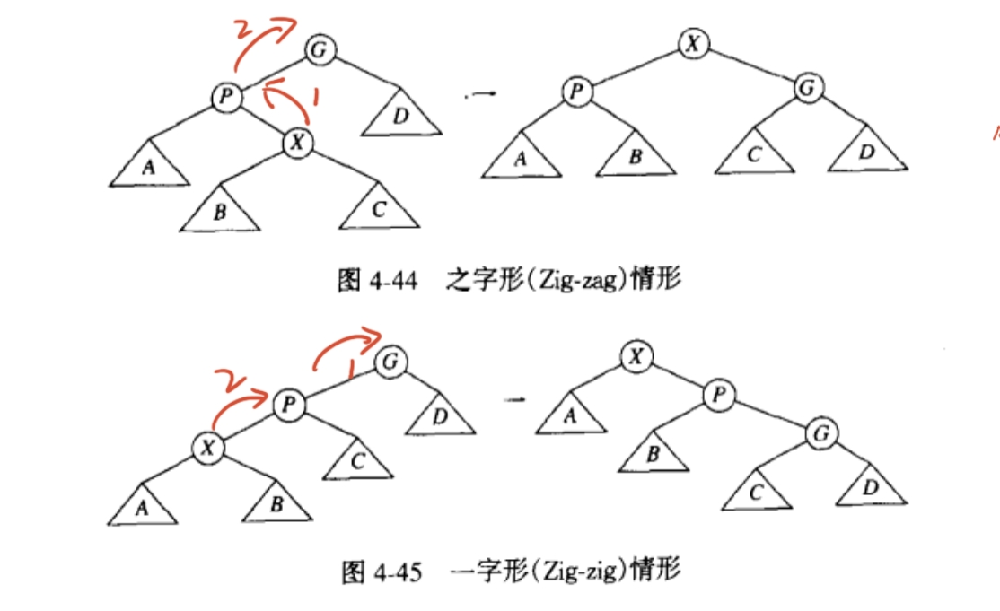

ADS
Chapter 1: AVL树
AVL树是带有平衡条件的二叉查找树，在结点结构中需要记录以其为根结点的子树的高度，要求每个结点的左右子树的高度差不超过1。
在高度为h的AVL树中最少结点数\(S(h)\)由\(S(h)=S(h-1)+S(h-2)+1\)给出，且\(S(0)=1\),\(S(1)=2\)。由此可见，\(S(h)\)与斐波那契数密切相关。实际上S(h) = F(h+2)-1
AVL树通过引入平衡条件，避免出现一些极端情况(如退化成链表)，保证了二叉查找树的查找、插入、删除操作的时间复杂度均为\(O(logn)\)
若将需要重新平衡的节点叫做a，则破坏平衡的情况有以下四种：
- LL：对a的左儿子的左子树进行一次插入
- RR：对a的右儿子的右子树进行一次插入
- LR：对a的左儿子的右子树进行一次插入
- RL：对a的右儿子的左子树进行一次插入 其中LL，RR两种情况下只需要一次旋转，而RL，LR则需要两次旋转。
代码实现：
-
函数即树的结构声明：
C 1 2 3 4 5 6 7 8 9 10 11 12 13 14 15 16 17 18 19 20 21 22 23 24 25 26 27 28 29
#ifndef _AvlTree_H struct AvlNode; typedef struct AvlNode *Position; typedef struct AvlNode *AvlTree; AvlTree MakeEmpty(AvlTree T); Position Find(ElementType X, AvlTree T); Position FindMin(AvlTree T); Position FindMax(AvlTree T); AvlTree Insert(ElementType X, AvlTree T); AvlTree Delete(ElementType X, AvlTree T); ElementType Retrieve(Position P); #endif struct AvlNode{ //结点声明 ElementType Element; AvlTree Left; AvlTree Right; int Height; } int Height(Position P){ if(P == NULL) return -1; else return P->Height; } -
各种旋转
C 1 2 3 4 5 6 7 8 9 10 11 12 13 14 15 16 17 18 19 20 21 22 23 24 25 26
Position SingleRotateWithLeft(Position K2){//K2有左孩子，其左孩子旋转后为新的父节点 Position K1; K1 = K2->Left; K2->Left = K1->Right; K1->Right = K2; K2->Height = Max(Height(K2->Left), Height(K2->Right)) + 1; K1->Height = Max(Height(K1->Left), K2->Height) + 1; return K1; } Position SingleRotateWithRight(Position K1){//K1有右孩子，其右孩子旋转后为新的父节点 Position K2; K2 = K1->Right; K1->Left = K2->Right; K2->Left = K1; K2->Height = Max(Height(K2->Left), Height(K2->Right)) + 1; K1->Height = Max(Height(K1->Right), K2->Height) + 1; return K2; } Position DoubleRotateWithLeft(Position K3){//K3有左孩子，其左孩子的右孩子旋转后为新的父节点 K3->Left = SingleRotateWithRight(K3->Left); return SingleRotateWithLeft(K3); } Position DoubleRotateWithRight(Position K1){//K1有右孩子，其右孩子的左孩子旋转后为新的父节点 K1->Right = SingleRotateWithLeft(K1->Right); return SingleRotateWithRight(K1); } -
插入
| C | |
|---|---|
1 2 3 4 5 6 7 8 9 10 11 12 13 14 15 16 17 18 19 20 21 22 23 24 25 26 27 28 29 30 | |
| C | |
|---|---|
1 2 3 4 5 6 7 8 9 10 11 12 13 14 15 16 17 18 19 20 21 | |
Chapter 2: 伸展树
伸展树(Splay Tree)，是一种自平衡的二叉查找树，在访问伸展树中的某一个结点后，会通过一系列操作将该结点移动到树的根结点，使得再次访问该结点所需要的时间减少。
一种简单的想法是在找到待访问结点后不断应用单旋转，直到将该结点移动到树的根结点。但是该方法存在较大的局限性。当面对退化成链表的二叉搜索树时，在访问完所有结点后，树又会恢复成原来的模样，且在过程中始终处于这种极端情况下，这无法减少多次访问结点所需的时间。
于是引入了伸展操作，其操作方法同样基于旋转。令X是待访问的结点，若其同时具有父结点P和祖父结点G，有两种对称的情况：X和P一个为左儿子，另一个为右儿子(zig-zag)；或是X和P都为左儿子或都为右儿子(zig-zig)，我们作如下变换： 
代码实现:
-
结构声明:
C 1 2 3 4 5 6 7 8 9 10 11 12 13 14 15 16 17 18 19 20 21 22 23 24 25 26 27 28
#ifndef _SplayTree_H struct SplayTreeNode; typedef struct SplayTreeNode * SplayTree; typedef struct SplayTreeNode * Position; SplayTree MakeEmpty(); void Zig(SplayTree); void Zag(SplayTree); void ZigZig(SplayTree); void ZagZag(SplayTree); void ZigZag(SplayTree); void ZagZig(SplayTree); int isLeftChild(SplayTree); int isRightChild(SplayTree); void Splay(SplayTree); SplayTree Find(SplayTree, ElementType); SplayTree Insert(SplayTree, ElementType); SplayTree Delete(SplayTree, ElementType); #endif typedef struct SplayTreeNode * SplayTree,Position; struct SplayTreeNode{ ElementType Element; SplayTree Left; SplayTree Right; SplayTree Parent; }; -
伸展:
C 1 2 3 4 5 6 7 8 9 10 11 12 13 14 15 16 17 18 19 20 21 22 23 24 25 26 27 28 29 30 31 32 33 34 35 36 37 38 39 40 41 42 43 44
void Zig(SplayTree T){ SplayTree Parent = T->Parent; SplayTree GrandParent = Parent->Parent; if(GrandParent){ if(GrandParent->Left == Parent){ GrandParent->Left = T; }else{ GrandParent->Right = T; } } T->Parent = GrandParent; Parent->Parent = T; Parent->Left = T->Right; if(T->Right){ T->Right->Parent = Parent; } T->Right = Parent; } void ZigZig(SplayTree T){ Zig(T->Parent); Zig(T); } void ZigZag(SplayTree T){ Zag(T); Zig(T); } void Splay(SplayTree T){ SplayTree Parent; while(Parent = T->Parent){ if(Parent->Parent){ if(isLeftChild(T) && isLeftChild(T)){ ZigZig(T); }else if(...){ ... } }else{ if(isRightChild(T)){ Zag(T); }else{ Zig(T); } } } } -
插入:
C 1 2 3 4 5 6 7 8 9 10 11 12 13 14 15 16 17 18 19 20 21 22 23 24 25 26 27 28 29 30 31 32 33 34 35 36 37 38 39 40 41 42 43 44
SplayTree Insert(SplayTree tree, ElementType data) { SplayTree curr = tree, next = tree; while (1) { if (next == NULL) { if (curr == NULL) return CreatSplayTreeNode(data); else { if (data < curr->data) { next = CreatSplayTreeNode(data); next->parent = curr; curr->left = next; Splay(next); return next; } else { next = CreatSplayTreeNode(data); next->parent = curr; curr->right = next; Splay(next); return next; } } } else { curr = next; if (data < curr->data) next = curr->left; else if (data > curr->data) next = curr->right; else { Splay(curr); // Equal to Find(curr, data) return curr; } } } } -
删除:
C 1 2 3 4 5 6 7 8 9 10 11 12 13 14 15 16 17 18 19 20 21 22 23 24 25 26 27 28 29 30 31 32 33
SplayTree Delete(SplayTree tree, ElementType data) { if (tree == NULL) { printf("Empty tree"); return tree; } Find(tree, data); if (!tree->left || !tree->right) { SplayTree temp = tree->left ? tree->left : tree->right; if (temp) temp->parent = NULL; free(tree); return temp; } else { // Find the largest node in the left subtree SplayTree temp = tree->left; while (temp->right) temp = temp->right; Splay(temp); temp->right = tree->right; tree->right->parent = temp; free(tree); return temp; } return tree; }
Chapter 3: 摊还分析
一般的分析是对单次的操作给出最坏的时间界，但通常情况下，最坏的情况不会时常发生。例如有时我们可以证明，对于某一操作，任意\(M\)次操作总共花费\(O(MlogN)\)最坏情形时间，因此在长期运行中就像每次操作花费\(O(logN)\)时间一样。这种无法保证具体每次操作所花费时间，但可以帮助我们分析多次操作的最坏情形的时间界被称作摊还时间界(amortized time bound)。摊还时间界比最坏情形界弱，比平均情形界强。 摊还分析共有三种分析方法：
- 聚合分析（aggregate analysis） 以栈的相关操作为例。可以对栈S进行两个操作：puhs(S,x)、pop(S)，两个操作均花费\(O(1)\)时间，因此n个push和pop操作实际会花费\(\Theta(n)\)时间。现在引入新操作multipop(S,k)：从栈S中弹出k个栈中的元素。假设栈的大小为n，则multipop在最坏情形下会花费\(O(n)\)时间，若有n个push、pop、multipop操作，操作对象为一空栈，按最坏情形分析，则会花费\(O(n^2)\)时间。然而，multipop和pop操作在栈为空时无法被执行，因此n个操作所花费的时间取决于push的次数。所以n个操作所花费的时间应为\(O(n)\)，平均下来每个操作所花费的摊还时间为\(O(n)/n = O(1)\)。
-
核算法（accounting method） 核算法对每个操作赋予一个代价（charges），每个操作所被赋予的代价可能大于也可能小于其实际花费的时间，n个操作所花费的代价与实际花费的时间被称为n个操作的credit，需要时刻保证credit为正值。将操作的摊还代价记作\(\hat{c_i}\)，实际代价记为\(c_i\)，则需要保证：
\[credit = \sum_{i=1}^n\hat{c_i} - \sum_{i=1}^n c\geq 0\]同样以栈为例，假设栈中元素数量为s，则对一个空栈来说，push、pop、multipop的实际代价分别为1，1，min（k，s）。而一种摊还代价的设计为：push的摊还代价为2，pop和multipop的摊还代价均为0。同样是因为pop和multipop的操作前提是栈非空，即之前进行过push操作。
一种理解核算法的方式是，假设每个操作都需要花费一定数目的钱（摊还代价），相对于标准定价（实际花费时间）来说，一个操作可以多付也可以少付，而少付的前提是前面的操作多付出的部分足以抵扣这一次少付的部分。
-
势能法（potential method）
Chapter 4: 红黑树
红黑树是一种大致平衡的二叉查找树，其操作较为复杂，但也具有良好的效率，可以在\(O(logN)\)时间内完成查找，插入，删除等操作。其每个结点需要储存五个信息：父节点，左儿子，右儿子，颜色，键值。若一个结点没有左儿子或右儿子，则指向哨兵结点NIL。红黑树需要满足以下五条性质：
- Every node is either red or black
- The root is black
- Every leaf(NIL) is black
- If a node is red, then both its children are black
- For each node, all simple paths from the node to descendant leaf contain the same number of black nodes
如图为一棵红黑树：

从某个节点出发到达一个叶节点的任意一条简单路径上包含的黑色节点的数目被称作该结点的黑高（black-height），简记作\(bh(x)\)，红黑树还具有以下两条性质：
- A red-black tree with \(n\) internal nodes has height at most \(2\lg(n+1)\)
-
\(bh(root) \geq h/2\)
-
插入 红黑树的插入情况大致有以下几种及其对称情况：

- case 1： 这种情况下我们只需改变冲突节点的颜色即可，即将父亲节点与叔叔节点染黑，将祖父节点染红。
- case 2： 这种情况需要利用AVL树中类似的旋转操作，将其转化为case 3
- case 3： 先染色再旋转。将父亲节点染黑，将祖父节点染红，然后进行一次右旋。
B+树
B+树在不同的地方定义略有不同，即使是ADS的几个不同老师所讲的B+树也并不完全一样。下面的内容来自ADS课程的PPT:
A B+ tree of order M is a tree with the following structral properties:
The root is either a leaf or has between 2 and M children.
All nonleaf nodes (except the root) have between \(\lceil\) M/2 \(\rceil\) and M children.
All leaves are at the same depth
堆
堆是至少满足至少两种以下操作的数据结构：Insert和DeleteMin。堆的种类很多，从简单到复杂包括二叉堆，左式堆，斜堆，二项队列，斐波那契堆等。
二叉堆
二叉堆在形式上是一棵完全二叉树，其特点是子节点的元素大小不小于其父结点的元素大小，这种二叉堆被称作小顶堆，也有具有相反性质的大顶堆。由于二叉树是完全的，所以树的高度是\(\lfloor \log(N) \rfloor\)。又由于完全二叉树很有规律，所以我们可以用数组来表示它，而不需要使用指针： 对于数组中位置为\(i\)的结点，其左孩子结点为\(2i\)，右孩子结点为\(2i+1\)，父结点为\(\lfloor i/2 \rfloor\)。 - 结构声明：
| C | |
|---|---|
1 2 3 4 5 6 7 8 9 10 11 12 13 14 15 16 | |
| C | |
|---|---|
1 2 3 4 5 6 7 8 9 10 11 | |
| C | |
|---|---|
1 2 3 4 5 6 7 8 9 10 11 12 13 14 15 16 17 18 19 20 21 22 23 | |
左式堆
左式堆是一种特殊的二叉堆，其结点除了存放键值，左右儿子外，还需要存放“零路径长”，其定义为从该节点到一个没有子节点的结点最短路径长。左式堆要求每个结点的左儿子的零路径长不小于右儿子的零路径长。因此，左式堆是一种非常不平衡的二叉堆，但其可以实现高效的合并操作。左式堆的合并操作将具有较小的根节点的右子树与具有较大的根节点的堆递归地进行合并，最后交换根结点的左右子树，否则会破坏左式堆的基本性质。插入可以被视作特殊的合并操作。 - 合并：
| C | |
|---|---|
1 2 3 4 5 6 7 8 9 10 11 12 13 14 15 16 17 18 19 20 21 22 23 24 25 26 27 28 | |
斜堆（Skew Heap）
斜堆是左式堆的自调节形式，其与左式堆的关系类似于Splay Tree和AVL Tree的关系。斜堆不存在对树的结构限制，因此结点中不需要存放有关零路径长的信息。斜堆的基本操作也是合并，但与左式堆的合并稍有差别。左式堆会检查左右儿子的零路径长并对不符合左式堆性质的结点执行交换左右儿子的操作。但斜堆的交换是无条件的。 - 合并：
| C | |
|---|---|
1 2 3 4 5 6 7 8 9 10 11 12 13 14 15 16 17 18 19 20 21 22 23 24 25 26 27 28 | |
二项队列（Binomial Queue）
二项队列并非一棵树，而是堆序树的集合，称为森林，其中的每一棵树都是二项树。二项树的结点个数为2的幂次。高度为0的二项树是一棵单节点树，高度为\(k\)的二项树\(B_k\)通过将一棵二项树\(B_{k-1}\)附接到另一棵二项树\(B_{k-1}\)的根上构成。如图：
 高度为\(k\)的二项树恰好有\(2^k\)个结点，而在深度\(d\)处的结点数是二项系数\(C_k^d\)。
- 结构声明：
高度为\(k\)的二项树恰好有\(2^k\)个结点，而在深度\(d\)处的结点数是二项系数\(C_k^d\)。
- 结构声明：
| C | |
|---|---|
1 2 3 4 5 6 7 8 9 10 11 12 | |
| C | |
|---|---|
1 2 3 4 5 6 7 8 9 10 11 12 13 14 15 16 17 18 19 20 21 22 23 24 25 26 27 28 29 30 31 32 33 34 35 36 37 38 39 40 41 42 43 44 45 46 47 48 49 50 51 52 | |
斐波那契堆
分治(divide-and-conquer)
分治，即分而治之。将原问题分解成若干个小的子问题，分别求出子问题的解，最后将子问题的解合并成原问题的解。典型的例子为归并排序。
时间复杂度：
1.主定理： 方程\(T(N) = aT(N/b) + O(N^k)\)的解为: $$ T(N) = \begin{cases} O(N^{log_b^a}),&a>b^k\\ O(N^klogN),&a=b^k\\ O(N^k),&a<b^k\\ \end{cases} $$